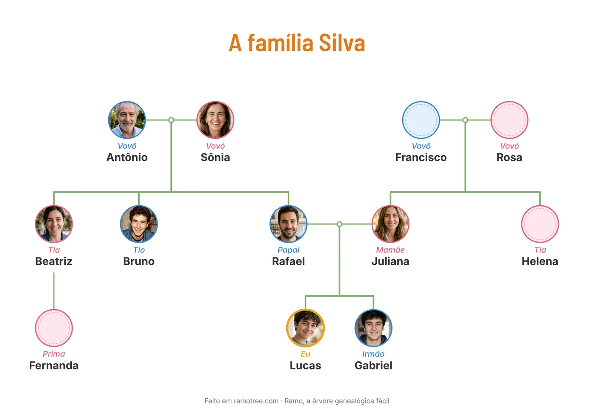

Árvore genealógica para crianças: como fazer o trabalho da escola
“Amanhã tem que levar a árvore genealógica.” Se isso soa familiar, aqui está um modelo grátis para imprimir, ideias para ficar bonita e como fazer com seu filho sem estresse.
Fica pronta em minutos: crie a árvore de vocês aqui, com os nomes e as fotos de cada um ou com espaços para desenhar, e baixe para imprimir.

O que a escola costuma pedir
Na educação infantil e nos primeiros anos, o normal é uma árvore de três gerações: a criança, os pais e os avós, com uma foto ou um desenho de cada um. Mais tarde às vezes entram bisavós, tios e primos, ou a árvore é pedida em inglês para praticar o vocabulário da família.
Passo a passo com seu filho
- Deixe que ele pergunte. Uma ligação ou uma visita aos avós para perguntar como se chamam, onde nasceram e como eram quando crianças. É a parte de que as crianças mais se lembram.
- Fotos ou desenhos. Imprima fotos pequenas ou deixe que ele desenhe cada um no seu quadro.
- Preencha o modelo. Os nomes com letra caprichada e, se couber, o ano de nascimento.
- Decore. Cole numa cartolina, desenhe um tronco e uma copa, ou faça as folhas com as marcas das mãos dele.
Ideias para ficar bonita
- Um cartaz com uma árvore desenhada e as fotos nas folhas.
- Um galho para cada lado da família, cada um de uma cor.
- Fazer no celular com o Ramo e levar impressa: sai com a foto de cada um, em A4 ou A3, e dá para imprimir em tamanho grande e pendurar na sala de aula.
Quando a família não cabe no modelo
Pais separados, famílias reconstituídas, adoção, duas mães ou dois pais, avós que já se foram… O modelo é só um ponto de partida: risque, acrescente quadros ou desenhe galhos novos. O importante é que a criança reconheça a sua família. No Ramo cada pessoa pode ter mais de um cônjuge, e a árvore se organiza sozinha.
A família em inglês
Caso a árvore tenha que ser em inglês (“My family tree”):
| Português | Inglês |
|---|---|
| pai, mãe (papai, mamãe) | father, mother (dad, mom) |
| pais | parents |
| irmão, irmã | brother, sister |
| avô, avó | grandfather, grandmother (grandpa, grandma) |
| avós | grandparents |
| bisavô, bisavó | great-grandfather, great-grandmother |
| tio, tia | uncle, aunt |
| primo, prima | cousin |
| filho, filha | son, daughter |
| neto, neta | grandson, granddaughter |
| marido, esposa | husband, wife |
Para apresentar: “This is my grandmother. Her name is Maria.” E se aparecer um parentesco complicado, a calculadora de parentesco explica.
Mais guias